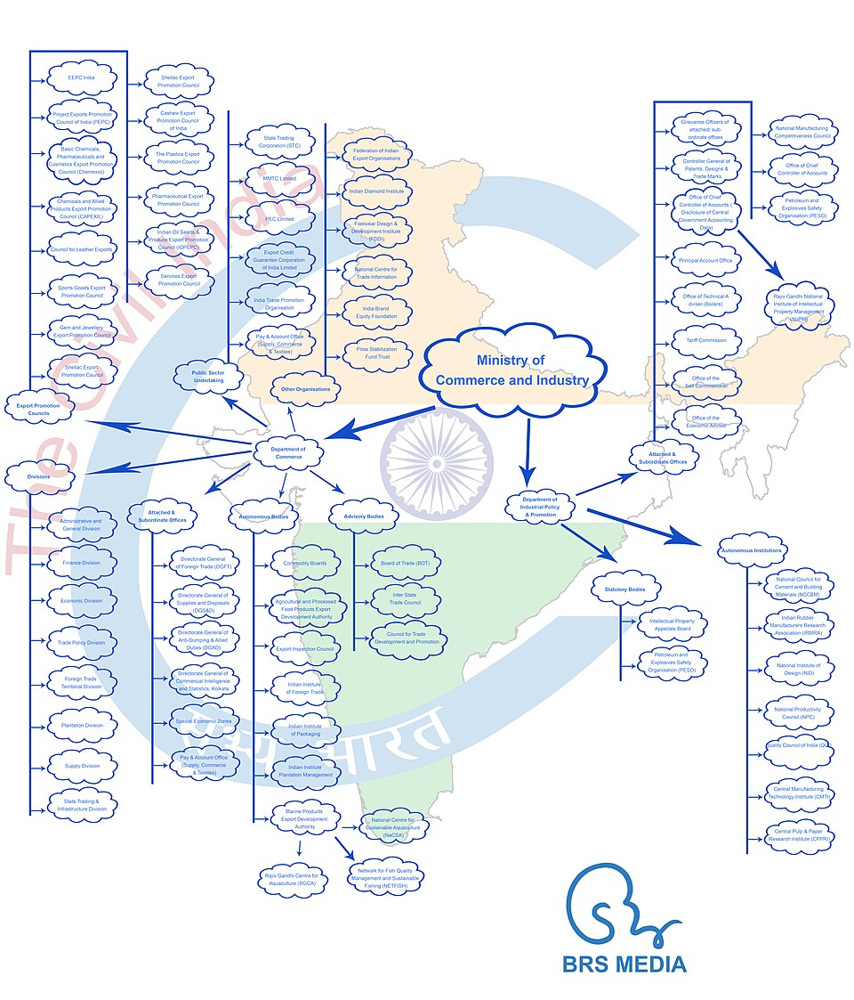

राष्ट्रीय
राष्ट्रीयपश्चिम बंगाल के मंत्री का दावा, ऋतब्रत गुट को सीएम का समर्थन
पश्चिम बंगाल के स्वास्थ्य मंत्री शारद्वत मुखर्जी के एक वायरल वीडियो से राज्य की राजनीति में विवाद शुरू हो गया है। उन्होंने दावा किया है कि बागी ऋतब्रत गुट को मुख्यमंत्री सुवेंदु अधिकारी का समर्थन प्राप्त है।
ताज़ा ख़बरें
 राष्ट्रीय
राष्ट्रीयसंविधान दिवस पर भाजपा मनाएगी गौरव दिवस, कांग्रेस निकालेगी रक्षा मार्च
संविधान दिवस के अवसर पर 26 नवंबर को देश भर में विभिन्न राजनीतिक कार्यक्रम आयोजित किए जा रहे हैं। भाजपा गौरव दिवस मनाएगी, वहीं कांग्रेस संविधान रक्षा मार्च निकालेगी।
 राष्ट्रीय
राष्ट्रीययूपी विधानसभा चुनाव 2027: सपा और कांग्रेस के बीच सीट शेयरिंग को लेकर तकरार
उत्तर प्रदेश विधानसभा चुनाव 2027 से पहले समाजवादी पार्टी और कांग्रेस के बीच सीटों के बंटवारे को लेकर खींचतान तेज हो गई है। दोनों दलों के बीच बात बनती नजर नहीं आ रही है।
राष्ट्रीयउत्तर प्रदेश विधानसभा चुनाव 2027: बीजेपी ने तेज की तैयारी, मतदाता सूची पुनरीक्षण पर जोर
उत्तर प्रदेश में 2027 के विधानसभा चुनाव की तैयारियों के तहत बीजेपी ने मतदाता सूची के विशेष पुनरीक्षण अभियान को लेकर समीक्षा बैठक की। सीएम योगी आदित्यनाथ ने कम प्रदर्शन वाले जिलों में सुधार के निर्देश दिए हैं।
राष्ट्रीयपंजाब सरकार ने गन्ना किसानों के लिए बढ़ाई कीमत, ₹431 प्रति क्विंटल हुआ भाव
पंजाब सरकार ने पेराई सीजन 2026-27 के लिए गन्ने का न्यूनतम समर्थन मूल्य बढ़ाकर ₹431 प्रति क्विंटल कर दिया है। राज्य सरकार का दावा है कि यह देश में गन्ने का सबसे अधिक भाव है।

व्यापारभारत ने अमेरिका के अतिरिक्त क्षमता वाले आरोपों को खारिज किया
भारत ने अमेरिका की ओर से औद्योगिक और व्यापार नीतियों पर लगाए गए अतिरिक्त उत्पादन क्षमता के आरोपों को खारिज कर दिया है। सरकार ने स्पष्ट किया है कि देश में किसी भी क्षेत्र में कोई अतिरिक्त उत्पादन नहीं है।
राष्ट्रीयसौरव दास ने बीजेपी समर्थक सोशल मीडिया खातों पर पासपोर्ट लीक करने का लगाया आरोप
कॉकटच जनता पार्टी के सह-संयोजक सौरभ दास ने आरोप लगाया है कि बीजेपी से जुड़े सोशल मीडिया खातों ने उनका पासपोर्ट ऑनलाइन लीक कर दिया है। उन्होंने इसके खिलाफ आपराधिक शिकायत दर्ज कराने की बात कही है।
राष्ट्रीयसंसद का शीतकालीन सत्र 15 दिसंबर से पहले हो सकता है शुरू
प्रधानमंत्री नरेंद्र मोदी ने 15 दिसंबर से पहले संसद का शीत सत्र बुलाने के संकेत दिए हैं। सरकार इस दौरान परिसीमन और महिला आरक्षण से जुड़े विधेयक पर कदम बढ़ा सकती है।
 अंतरराष्ट्रीय
अंतरराष्ट्रीयअमेरिकी सेना ने आयोवा संयंत्र में लगभग 5 टन विस्फोटक को नियंत्रित विस्फोट से नष्ट किया
अमेरिकी सेना ने सुरक्षा चिंताओं के चलते आयोवा के एक गोला-बारूद संयंत्र में लगभग 5 टन अस्थिर लेड एजाइड को नियंत्रित विस्फोट के जरिए नष्ट कर दिया है।
राष्ट्रीयकेरल के वायनाड की छह वर्षीय आइसा दुर्लभ जेनेटिक बीमारी से पीड़ित
केरल के वायनाड की रहने वाली छह साल की आइसा 'क्यूटिस लैक्सा' नाम की एक दुर्लभ जेनेटिक बीमारी से पीड़ित हैं, जिसके कारण वह बुज़ुर्ग जैसी दिखती हैं.
राष्ट्रीयउत्तर प्रदेश की राजनीति और मुलायम-अखिलेश के दौर पर क्या बोले आज़म ख़ान
एक साल जेल में रहने के बाद रिहा हुए समाजवादी पार्टी के वरिष्ठ नेता आज़म ख़ान ने एक साक्षात्कार में मुलायम सिंह यादव और अखिलेश यादव की कार्यशैली के फर्क समेत कई राजनीतिक मुद्दों पर अपनी बात रखी है।
खेलकेन विलियमसन बने डरबन सुपर जायंट्स के नए हेड कोच
न्यूजीलैंड के पूर्व कप्तान केन विलियमसन को 2027 SA20 लीग के लिए डरबन सुपर जायंट्स का हेड कोच नियुक्त किया गया है।
 राष्ट्रीय
राष्ट्रीयदिल्ली को अगले साल मिलेंगे सिरसपुर और हस्तसाल में दो नए अस्पताल
दिल्ली में स्वास्थ्य सेवाओं का विस्तार करते हुए सरकार अगले साल सिरसपुर और हस्तसाल में कुल 1,815 बेड वाले दो नए अस्पताल शुरू करने जा रही है, जिससे मरीजों को बेहतर इलाज की सुविधा मिलेगी।
राष्ट्रीयमोकामा: अनंत सिंह की बेटी की शादी में घुड़दौड़ के दौरान भारी भीड़, 10 किलोमीटर लंबा जाम
बिहार के मोकामा में विधायक अनंत सिंह की बेटी की शादी में घुड़दौड़ देखने पहुंची भारी भीड़ के कारण 10 किलोमीटर लंबा जाम लग गया। सुरक्षा कारणों से प्रतियोगिता का फाइनल राउंड टालना पड़ा।
राष्ट्रीयउत्तर प्रदेश चुनाव: गठबंधन पर सपा को इमरान मसूद की चेतावनी
कांग्रेस सांसद इमरान मसूद ने उत्तर प्रदेश विधानसभा चुनाव 2027 के लिए समाजवादी पार्टी से सम्मानजनक गठबंधन की मांग की है। उन्होंने कहा कि अखिलेश यादव को कांग्रेस को उचित महत्व देना होगा।
राष्ट्रीयगाजियाबाद: 2 करोड़ के इंश्योरेंस के लालच में पत्नी पर परिवार को जहर देने का आरोप
गाजियाबाद के इंदिरापुरम में एक महिला पर 2 करोड़ के बीमा और संपत्ति के लालच में पति, बेटे और भांजे को लेड पॉइजनिंग के जरिए धीमा जहर देकर मारने की साजिश रचने का मामला सामने आया है। पुलिस जांच जारी है।
टेकब्रेस्ट कैंसर का जल्द पता लगाने के लिए ब्रिटेन में शुरू हुआ दुनिया का सबसे बड़ा एआई ट्रायल
ब्रिटेन में लगभग सात लाख महिलाओं को शामिल करते हुए दुनिया का सबसे बड़ा एआई ट्रायल शुरू हुआ है। इसका मकसद मैमोग्राम जांच में कृत्रिम बुद्धिमत्ता की मदद से कैंसर का शुरुआती चरण में पता लगाना है।
 राष्ट्रीय
राष्ट्रीयदाऊद इब्राहिम के पूर्व घर को मस्जिद बताने पर बॉम्बे हाईकोर्ट नाराज
बॉम्बे हाईकोर्ट ने गैंगस्टर दाऊद इब्राहिम के मुंबई स्थित पूर्व घर को मस्जिद बताने वाली याचिका पर नाराजगी जताई। कोर्ट ने इमारत गिराने पर रोक 30 नवंबर तक बढ़ाई और नमाज पढ़ने पर रोक लगाई।
 व्यापार
व्यापारदेश में तेजी से बढ़ा गोल्ड लोन का बाजार, दो साल में बकाया ₹23.3 लाख करोड़ पहुंचा
क्रेडिट इंफॉर्मेशन कंपनी CRIF की रिपोर्ट के अनुसार, सितंबर 2026 तक देश में गोल्ड लोन का कुल बकाया दोगुने से ज्यादा बढ़कर ₹23.3 लाख करोड़ हो गया है।
खेलजिम्बाब्वे महिला क्रिकेट टीम के कोच मार्क कोल्स पर आईसीसी की कार्रवाई, कटी मैच फीस
आईसीसी ने जिम्बाब्वे महिला क्रिकेट टीम के हेड कोच मार्क कोल्स को आयरलैंड की कप्तान और कोच के खिलाफ आपत्तिजनक भाषा का इस्तेमाल करने पर सजा दी है। उनकी 65 फीसदी मैच फीस काटी गई है और तीन डिमेरिट अंक दिए गए हैं।
 व्यापार
व्यापारभारत और पाकिस्तान में सोने के तोले के वजन में क्या है अंतर
पाकिस्तान के सोना बाजार में एक तोला का मानक वजन लगभग 11.66 ग्राम होता है, जबकि भारत में पारंपरिक और स्थानीय बोलचाल में इसके मापने के तरीके में अंतर देखा जाता है।
राष्ट्रीयझांसी में खाद्य सुरक्षा विभाग का छापा, 'बिसरोली' ब्रांड की 2,151 पानी की बोतलें जब्त
उत्तर प्रदेश के झांसी में खाद्य सुरक्षा विभाग की टीम ने एक पानी की यूनिट पर छापा मारकर 'बिसरोली' ब्रांड की 2,151 बोतलें सीज की हैं। पानी के सैंपल को जांच के लिए प्रयोगशाला भेजा गया है।
राष्ट्रीयसंत को झूठ नहीं बोलना चाहिए: एबीपी शिखर सम्मेलन में अखिलेश यादव का सीएम योगी पर तंज
एबीपी शिखर सम्मेलन में समाजवादी पार्टी प्रमुख अखिलेश यादव ने उत्तर प्रदेश की बीजेपी सरकार पर निशाना साधा। उन्होंने शिक्षा, विकास और अन्य मुद्दों पर सवाल उठाते हुए 2027 के चुनावों में पीडीए गठबंधन की जीत का भरोसा जताया।
खेलवैभव सूर्यवंशी के रिकॉर्ड प्रदर्शन के बाद टी20 टीम में जगह को लेकर चर्चा तेज़
वैभव सूर्यवंशी ने एशिया कप राइज़िंग स्टार्स में यूएई के ख़िलाफ़ 204 रनों की रिकॉर्डतोड़ पारी खेली है। इस शानदार प्रदर्शन के बाद उनके भारतीय टी20 टीम में नियमित रूप से खेलने को लेकर सवाल उठने लगे हैं।
 राष्ट्रीय
राष्ट्रीयशुभेंदु अधिकारी का दावा, प्रणव मुखर्जी ने दी थी टीएमसी छोड़कर भाजपा में जाने की सलाह
पश्चिम बंगाल के नेता शुभेंदु अधिकारी ने दावा किया है कि पूर्व राष्ट्रपति प्रणव मुखर्जी ने उन्हें टीएमसी छोड़कर प्रधानमंत्री नरेंद्र मोदी के साथ जुड़ने की सलाह दी थी।
राष्ट्रीयहिमाचल प्रदेश: हाटी समुदाय में दो सगे भाइयों से युवती ने की शादी, सामने आई यह वजह
हिमाचल प्रदेश के हाटी समुदाय की एक युवती ने अपनी मर्जी से दो सगे भाइयों के साथ विवाह किया है। इस परंपरा के पीछे जमीन के बंटवारे को रोकने और पारिवारिक एकता बनाए रखने की व्यावहारिक वजह बताई गई है।
 राष्ट्रीय
राष्ट्रीयमुंबई 26/11 हमला: अजमल कसाब के वकीलों को 16 साल बाद भी नहीं मिली फीस
मुंबई में 26/11 आतंकी हमले के आरोपी अजमल कसाब की ओर से बॉम्बे हाईकोर्ट में पैरवी करने वाले दोनों वकीलों को 16 साल बाद भी फीस नहीं मिली है। वकीलों ने बकाया भुगतान के लिए कानूनी प्राधिकरण से गुहार लगाई है।
राष्ट्रीयदेश में गठबंधन की राजनीति तेज, दो साल में एनडीए में जुड़े चार दल
वर्ष 2024 के बाद से एनडीए का कुनबा बढ़ा है और इसमें चार नए दल शामिल हुए हैं, जिससे कुल दलों की संख्या 39 हो गई है। दूसरी ओर, इंडिया गठबंधन से दो दलों ने दूरी बनाई है।
 राष्ट्रीय
राष्ट्रीयउत्तराखंड की पंचाचूली चोटी से चंद्रोदय का वीडियो वायरल
डिजिटल कंटेंट क्रिएटर सागर आग्री ने उत्तराखंड की पंचाचूली चोटी से चंद्रोदय का एक सुंदर वीडियो साझा किया है, जो सोशल मीडिया पर चर्चा का विषय बना हुआ है।
 राष्ट्रीय
राष्ट्रीयपंजाब विधानसभा चुनाव आम आदमी पार्टी के लिए क्यों है अहम?
राजनीतिक विश्लेषकों के अनुसार, 2027 का पंजाब विधानसभा चुनाव आम आदमी पार्टी के राजनीतिक भविष्य और अस्तित्व के लिए बेहद अहम माना जा रहा है।
राष्ट्रीयपुणे कोर्ट के बाहर हत्या के आरोपी पर जानलेवा हमला, धारदार हथियार और फायरिंग
पुणे में शिवाजीनगर कोर्ट के बाहर हत्या के एक आरोपी पर छह लोगों ने धारदार हथियारों से हमला किया और गोली चलाई। गंभीर रूप से घायल पीड़ित को अस्पताल में भर्ती कराया गया है। पुलिस मामले की जांच कर रही है।
अंतरराष्ट्रीयइम्तियाज अली की नई सीरीज 'ओ साथी रे' का ट्रेलर नेटफ्लिक्स पर रिलीज
इम्तियाज अली द्वारा रचित नई वेब सीरीज 'ओ साथी रे' का ट्रेलर नेटफ्लिक्स पर जारी कर दिया गया है। इस सीरीज में अदिति राव हैदरी, अर्जुन रामपाल और अविनाश तिवारी मुख्य भूमिकाओं में हैं।
राष्ट्रीययूपी चुनाव: सीट शेयरिंग को लेकर कांग्रेस सांसद इमरान मसूद ने सपा पर उठाए सवाल
उत्तर प्रदेश विधानसभा चुनाव 2027 के लिए सीट बंटवारे को लेकर कांग्रेस सांसद इमरान मसूद ने समाजवादी पार्टी के रवैये पर असंतोष जताया है। उन्होंने कहा कि गठबंधन में गरिमा और आपसी सहयोग होना जरूरी है।
 राष्ट्रीय
राष्ट्रीयसुप्रीम कोर्ट से राहुल गांधी को राहत, आय से अधिक संपत्ति मामले में हाईकोर्ट का आदेश रद्द
सुप्रीम कोर्ट ने आय से अधिक संपत्ति के मामले में राहुल गांधी को राहत देते हुए इलाहाबाद हाईकोर्ट का आदेश रद्द कर दिया है। अदालत ने मामले को नए सिरे से विचार के लिए वापस हाईकोर्ट भेज दिया है।
 टेक
टेकDRDO विकसित कर रहा है घातक स्टील्थ कॉम्बैट ड्रोन, मिलेगा जेट इंजन
रक्षा अनुसंधान और विकास संगठन (DRDO) घातक नामक स्टील्थ कॉम्बैट ड्रोन का प्रोटोटाइप विकसित कर रहा है। यह जेट इंजन से लैस यूसीएवी दुश्मन के इलाके में गहराई तक सटीक हमला करने में सक्षम होगा।
राष्ट्रीयअसम में दो आईपीएस अधिकारियों के बीच मारपीट, डीआईजी और एसएसपी भिड़े
असम के कोकराझार में एक पार्टी के दौरान डीआईजी और एसएसपी के बीच मारपीट हो गई। मुख्यमंत्री हिमंत बिस्वा सरमा ने डीजीपी को मामले को सुलझाने की जिम्मेदारी सौंपी है।
राष्ट्रीययूपी चुनाव 2027: सपा और कांग्रेस के बीच सीट बंटवारे पर फंसा पेंच
उत्तर प्रदेश विधानसभा चुनाव 2027 के लिए सपा और कांग्रेस के बीच सीट शेयरिंग को लेकर हुई बैठक बेनतीजा रही। सपा ने सहारनपुर मंडल में कांग्रेस को केवल एक सीट का प्रस्ताव दिया है।
राष्ट्रीयबिलासपुर के वृद्धाश्रम में 75 साल के कन्हैया और 63 साल की सबीना ने रचाई शादी
हिमाचल प्रदेश के बिलासपुर स्थित वृद्धाश्रम में 75 वर्षीय कन्हैया लाल और 63 वर्षीय सबीना ने पारंपरिक रीति-रिवाजों से विवाह कर जीवन की नई शुरुआत की है।
 अंतरराष्ट्रीय
अंतरराष्ट्रीयतुर्किये में सैन्य हेलिकॉप्टर दुर्घटनाग्रस्त, वायुसेना के पांच जवानों की मौत
तुर्किये में प्रशिक्षण उड़ान के दौरान वायुसेना का AS-532 कूगर हेलिकॉप्टर क्रैश हो गया। इस हादसे में पांच क्रू सदस्यों की मौत हो गई है। पिछले दो हफ्तों में देश में यह दूसरा सैन्य हेलिकॉप्टर हादसा है।
राष्ट्रीययूपी में सपा और कांग्रेस के बीच सीट बंटवारे पर फंसे पेंच की पांच वजहें
उत्तर प्रदेश विधानसभा चुनाव के लिए समाजवादी पार्टी और कांग्रेस के बीच सीट बंटवारे पर गतिरोध जारी है। सीटों की संख्या, मजबूत सीटों की मांग और राजनीतिक महत्वाकांक्षाओं को लेकर दोनों दलों में मतभेद बने हुए हैं।